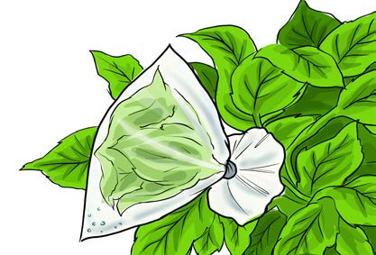

A simple experiment on living and non-living things
Experiment 1:
Investigating excretion in plants
Aim:
To show that plants excrete water vapour through leaves
Materials:
A plant with leaves, a string or rubber band and a transparent plastic bag
Procedure
1. Wrap a plant leaf or leaves in a transparent plastic bag. Do not detach the leaf or leaves from the plant.
2. Tie the plastic bag with a string or rubber band to make sure air does not pass. Figure 3 shows a leaf of a plant wrapped in a plastic bag.
Note: Make sure the plastic bag is not torn.

Figure 3: A leaf wrapped in a plastic bag